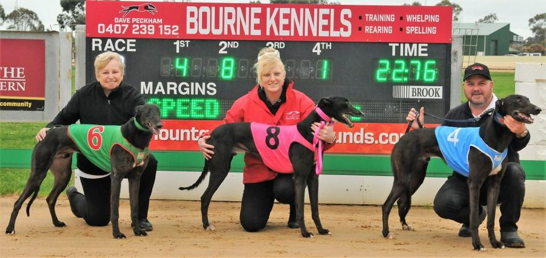

J.K. The Great Syndicate
The Greyhounds
The syndicate's dogs – Zeenat, Keen One and Keen Too – and replays of their winning runs.


J.K. The Great Syndicate
The syndicate's dogs – Zeenat, Keen One and Keen Too – and replays of their winning runs.
